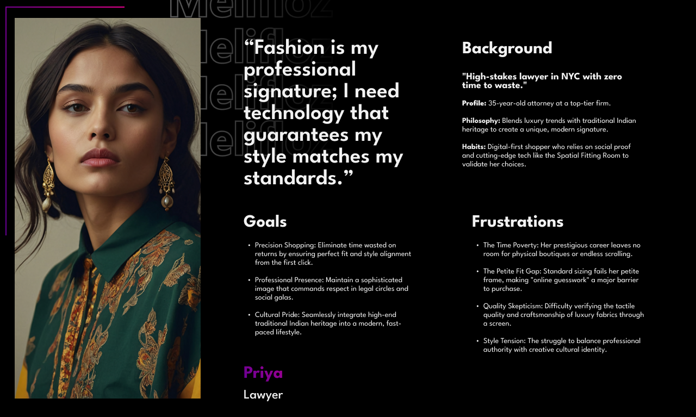
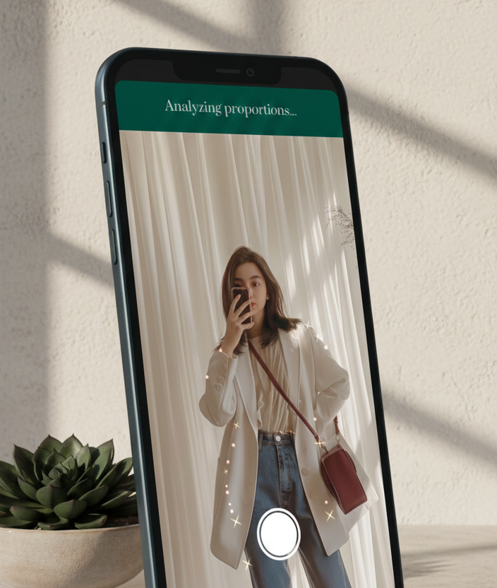
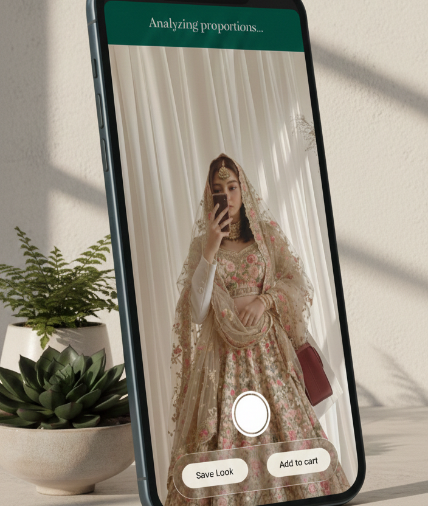
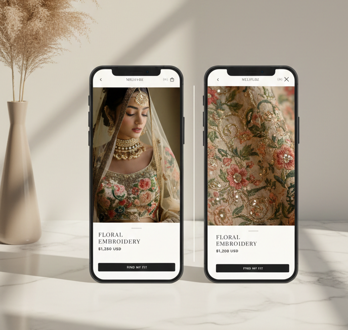

Melifloz
Designing a confidence-first commerce experience for premium fashion.

- Role
- UI Designer (freelance)
- Years
- 2019–2020
- Client
- Pre-investment e-commerce startup (freelance) · Web & mobile app with spatial fitting
- Result
- ★ Key asset in the startup's first funding pitch
- What I worked on
- UX strategy · User research & personas · Body-scan fitting flow · Modular design system · High-fidelity UI
Buying high-value fashion online comes with one kind of friction: uncertainty.
For customers buying premium Indian garments, rich in texture, embroidery, and cultural detail, traditional e-commerce fails to communicate fit, drape, and presence.
Melifloz was created to bridge that gap.
A high-fidelity spatial commerce ecosystem designed to help users make confident, informed purchase decisions when buying high-value Indian garments online.
The challenge
Traditional fashion e-commerce relies heavily on static imagery and size charts, which are insufficient for garments with complex silhouettes and materials.
- High return rates due to poor fit expectations
- Low confidence when purchasing premium-priced items
- Limited emotional connection to the product
How might we help users visualize how high-value garments will look and feel on their own bodies before committing to a purchase?
Platform context
The experience was designed within the constraints of a modular e-commerce platform, where performance, scalability, and conversion are as critical as visual expression.
- Component-based layouts adaptable to different product categories
- Reusable UI patterns aligned with theme limitations
- Clear separation between content, interaction, and commerce logic
The goal was elevating modular commerce through sensory-driven interactions.
Understanding the users
Research and behavioral analysis revealed three core user segments:
- Fashion-conscious buyers looking for premium, culturally rich garments and willing to invest when confident in the fit
- Occasion-driven shoppers purchasing outfits for weddings, celebrations, or special events
- Remote customers without access to physical boutiques

Confidence, not discounts, was the main conversion driver.
UX strategy
The strategy was all about product-market fit. I wanted to build more than just another fashion app; I wanted to create something that actually helps a startup stand out from giants like Amazon or Farfetch.
Scalable design
I built a modular component system so the platform can grow quickly without breaking.
Competitive edge
Using "spatial fitting" helps users feel the actual garment, reducing hesitation before they buy.
Investor-ready
The final design was a key asset to show investors that the technology is viable and solves a real problem.
Fit confidence layer
Instead of making the body scan a standalone feature, we integrated it directly into the shopping flow. The goal is simple: let users see how the fabric drapes and fits their actual measurements so they can buy with total confidence.


Vision & fundraising
Since this was a startup looking for investment, success was about how the design helped tell the business story. The design made the case for three key points:
- Fewer returns: by seeing the real fit beforehand, users are much less likely to return items.
- Luxury confidence: it is easier to buy high-value items when you can actually visualize them on your own body.
- Real innovation: we showed that we could use advanced tech to solve a massive problem in the fashion industry.

Design wasn't just about looks; it was the main tool to turn a visionary idea into a fundable reality.
Melifloz taught me that for a startup, design is about taking the "risk" out of the future.
My goal was to show that technology can be human and help luxury shopping feel as personal and secure as being in a physical boutique.